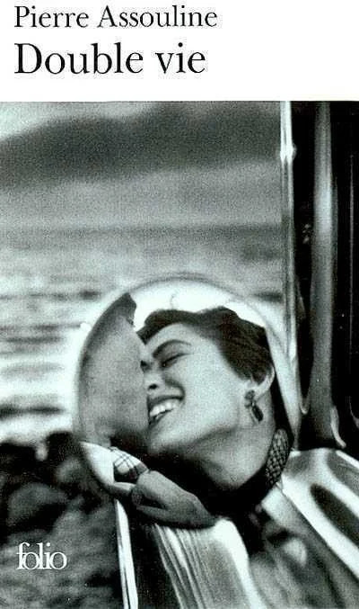
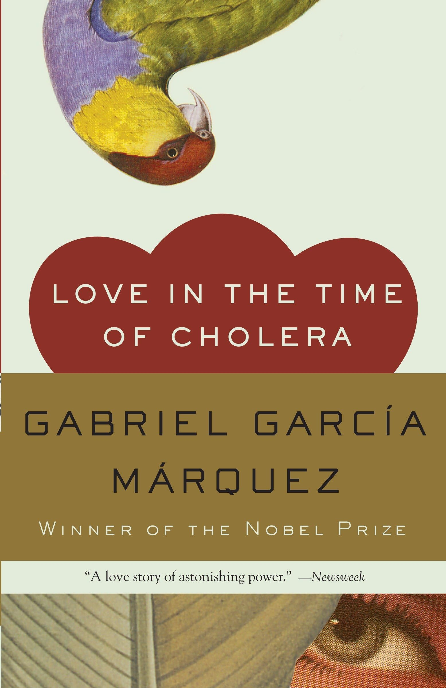
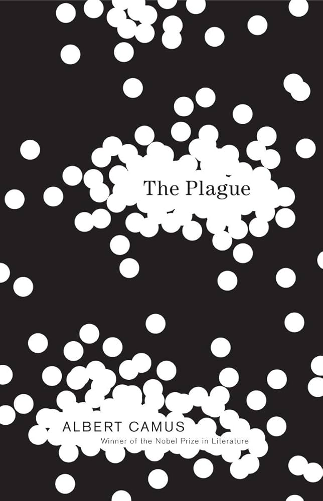

Double Vie by Pierre Assouline
Synopsis: Rémi is a 40-year-old rock art specialist who has been married for over 10 years and has two kids. But he has a secret. He's been having an affair with Victoria; she’s blonde, bad, beautiful and much younger. It’s been two years since their affair began, and his wife still has no clue. Everything was going great until Victoria failed to show up to their date. Then, days go by, and Rémi still doesn’t hear from her. What is going on, and where is Victoria?
I really liked this book. I practically read it with a dictionary by my side, which didn’t
really
bother me because I learned a lot of new words. The characters are very well-written,
especially
Rémi (which is funny because I didn’t like his character). The descriptions are so vivid; it
felt as
if I was watching the scenes unfold before my eyes. Not to mention, the suspense was really
well
done; I was on the edge of my seat while reading.
My rating: 8.5 out of 10

Love in the Time of Cholera by Gabriel García Márquez
Synopsis: Florentino Ariza fell in love with Fermina Daza at first sight. He pursued her relentlessly, and the two eventually fell madly in love. However, their love story gets cut short when Fermina suddenly rejects him. Florentino vows to never love again and makes it his life’s goal to win her back. Years later, Fermina marries and has kids with someone else. But Florentino remains faithful to her. After over 50 years, Fermina’s husband passes away, and Florentino sees this as his chance of getting her back. And so he begins his fight to win her heart all over again.
This is hands down the most beautifully written book I have ever read! This book goes
beyond
romantic love; it discusses all kinds of love: unrequited, platonic, familial, forbidden. I
will
admit, I struggled with Florentino’s character; I don’t really like him, but I enjoyed
watching
his love grow stronger over the years.
I rate it a 10 out of 10.

The Plague by Albert Camus
Synopsis: It all starts with the discovery of a dead rat, then two, then four, then ten, and eventually hundreds, and then thousands. With these dead rats comes a plague. Dr Rieux, his colleagues, friends, and associates must rise to the occasion and find a cure. This is a story of resilience and solidarity. No one can live through a plague and remain the same.
I've read this book twice, once in French and now in English. I think it is my favourite
Camus novel so far. Camus really has a talent for imagery; through his descriptions, I was
able to see the settings vividly. The book is slow paced but i like that because it allowed
me to follow the plague's progression. As I read this book, I found quite a lot of passages
that made me put the book down and think/reflect (especially Father Paneloux's sermons). I
love it when books do that.
I rate it a 10 out of 10.